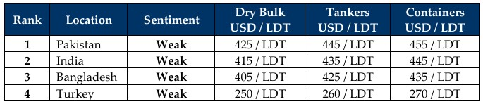

inWeekly Demolition Reports28/07/2025

As we stand on the eve of Week 31 this 2025, global market turmoil continues unimpeded as wars rage, freight markets firm,economies flutter, and oil, currencies, and steel prices all fluctuate in a wavering tandem, delivering headaches along the way for all on this ride. While Trump announces further deals with Japan and the EU late on Sunday, his sketchy past is what keeps hammering this administration down, which itself is scrambling to do damage control vs. attempting to fix the state of the U.S. economy that has seen the U.S. Dollar weakening against key global competitors, whilst strengthening against virtually all recycling destinations. U.S. inflation meanwhile climbs from 2.4% to 2.7% in June as Turkey, India, Bangladesh, and even Pakistan all report declines in their respective inflations. Oil futures also declined 1.3% to settle at USD 65.2 / barrel on the back of said U.S. trade deals, in addition to concerns of an oversupply of oil as Trump announces the possibility of easing sanctions against Venezuela that could add a reported 200,00 barrels of oil to global supply-chain. The Baltic Exchange’s main sea freight index meanwhile reported another improvement this week with the Cape index surging 1% of its total annual value via a 24% gain just this week, all while the Panamax and Supramax indices confoundingly fell 2.3% & 0.3% respectively.
Notwithstanding, glimmers of life seem to be emerging from the Indian sub-continent ship recycling markets as offers on the large(r) LDT LNGs making the rounds (including various other types of tonnage) surpassed most expectations this week. But what remained the most impressive (and as forecasted in weeks prior), Alang recyclers have been the ones to take in virtually all of the market (and private) fixtures as Alang’s anchorage was ‘fully loaded’ this week. This may be a sign that the markets have likely bottomed out, but the situation may remain in a state of stasis until the end of next week before any movements can be expected from any of the sub-continent markets, especially after the recent and significant decline of about USD 60/LDT in residual values from the highs of USD 400s/LDT seen at the start of the year, including the massive USD 600/LDT seen just 12 months prior. Moreover, we have also seen prices decline below USD 400/LDT during the historically slower monsoon / summer months as several deals are still being fixed at those levels in 2025 as well.
Finally, while the adoption of the Hong Kong Convention (HKC) for recycling has been one of the biggest changes (and challenges) in the history of ship recycling, it has also delivered a healthy dose of uncertainty surrounding the (changing) regulations and increased documentary requirements filtering through to the various waterfronts, with much infrastructure catch-up work still to be completed in both Bangladesh and (especially) Pakistan before the entire sub-continent falls in line with all of the HKCs requirements. Although a trickle of market candidates (aside from a plethora of large LDT LNG) candidates do seem to be making the rounds, supply concerns overall present challenges for recyclers as freight markets firm against the backdrop of pending tariff uncertainties once again. Yet, it is expected to a busier Q4 this year and once HKC formalities and requirements are more ingrained after yard upgrades are completed, there is a chance we may see activity in the sub-continent fire up once again.
For Week 30 of 2025, GMS Market Rankings / vessel indications are as below.

📄 Download PDF: Ship-recycling-market-insight-Week-31-07-25-2025-Glimmer_of_Life.pdf
Source: GMS,Inc.https://www.gmsinc.net/gms_new/index.php/web